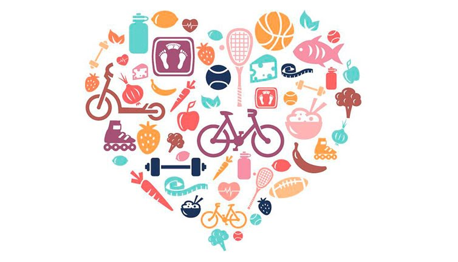

Sintaxis Nutrición
Sintaxis es un espacio de nutricion holistica e integrativa considerando las principales filosofias y corrientes nutricionales que tienen como objetivo considerar a la persona como un todo.
Nuestra misión es: Que cada paciente logre un equilibrio cuerpo y mente mediante una alimentación adecuada y equilibrada.
Ofrecemos profesionales experimentados que están en constante contacto y seguimiento de los pacientes, asegurando un servicio de excelencia y calidad.
Nuestra Ubicación
Nuestro establecimiento está ubicado en el corazón de la ciudad
Planes de alimentación
- Individuales y grupales
- Ajustado a las necesidades
- Respetando los gustos y preferencias
- Con objetivos reales y posibles